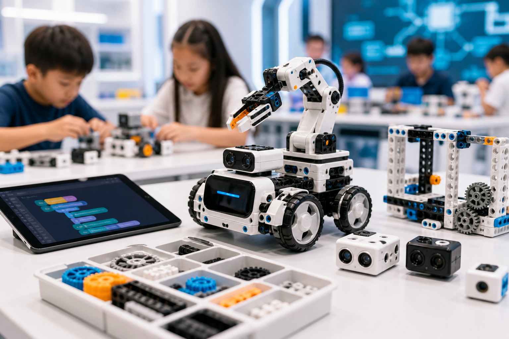

讓孩子從玩中學 AI
培養未來科技競爭力
結合 AI 無人機、AI 機器人 與 生成式 AI，透過實作任務與作品創作，幫助孩子建立邏輯思考、科技素養與創新能力。
AI 無人機 (Drone Control)
3D 空間飛行航線規劃學

AI 機器人 (Robotics)
超音波避障多傳感自走硬體

生成式 AI (Art Wizard)
圖文大語言提示詞創意引導
三大核心學習領域，啟迪無限可能
我們將前沿 AI 技術轉化為有條理、易於理解的學習模組。幫助孩子快速完成從科技玩具到高階開發者的跨越。

AI 無人機課程 熱門
學習飛行邏輯、空間判斷、任務規劃與程式控制，讓孩子在實作中理解科技應用。
- 飛行任務挑戰 (3D 航線規劃)
- 空間方向訓練 (提升三維邏輯)
- 程式邏輯建立 (Scratch/Python操控)
- 競賽任務導入 (銜接科技競賽)

AI 機器人課程 核心
透過機器人任務、感測器控制與避障挑戰，培養孩子的問題解決能力與邏輯思維。
- 機器人控制 (自走車多模態運動)
- 避障挑戰 (精密感應迷宮破解)
- 感測器應用 (紅外線與超音波原理)
- 任務式學習 (專注克服難題結構)

生成式 AI 課程 未來
學習 AI 圖文生成、提示詞設計與創意表達，讓孩子完成自己的第一個 AI 創作作品。
- AI 圖文生成 (多元風格美學體驗)
- 提示詞訓練 (精準語言表達訓練)
- 創意作品產出 (數位個人專案集)
- 數位表達能力 (展現個人科技創思)
AI 不是未來才需要，而是孩子現在就該理解的能力
世界正以前所未有的速度自動化。提早起步不僅能獲得卓越的科技眼界，還能內化為不受淘汰的思考武器。
科技素養普及
AI 已經進入學習、生活與未來職涯。提早接觸，能使孩子免受陌生恐懼，將科技轉化為日常生活中的幫手。
邏輯思考建立
AI 課程的核心並非硬編碼程式，而是訓練演算法、步驟拆解、流程圖設計等系統性的極佳思考方式。
問題解決能力
透過無人機導航、機器人組裝調試與提示詞修正，孩子能在反覆挫折中學會探究問題、修正策略。
創意與專注力
運用生成式 AI 創作與機械硬體控制，激發孩子內心原本模糊的科學幻想，在做中學的過程中獲得超強專注力。
豐富學習歷程
課程能完全對接校園、國內科技運動大賽及學術競賽，在考學、升學中累積閃光的成果與團隊協作證書。
不可替代的競爭力
掌握「如何對 AI 提問」、「如何控制智慧模組」，孩子不僅是工具使用者，更是擁有駕馭科技能力的創作者。
孩子不是被動聽課，而是在任務中學會 AI
我們將 AI 無人機、AI 機器人與生成式 AI 設計成孩子看得懂、做得到、玩得起來的實作任務。
1. 無人機任務挑戰
孩子將透過飛行任務、路線规划與安全操作，理解空間判斷與程式控制的概念。
2. 機器人闖關任務
透過機器人移動、避障與感測器應用，孩子能在挑戰中培養邏輯思考與問題解決能力。
3. 生成式 AI 創作任務
孩子將學習提示詞設計、AI 圖文生成與創意表達，完成自己的第一個 AI 創作作品。
從零基礎到完成 AI 科技作品
不拔苗助長，我們為不同年齡與程度的孩子設計了最溫和且具備成就感的四個學習階段。
科技啟蒙
認識 AI、無人機、機器人與基礎操作，建立安全觀念與學習興趣。引導孩子從好奇轉變為探索，在歡樂的實際接觸中消除對程式的刻板恐懼。
程式邏輯
學習順序、迴圈、條件判斷與任務控制，建立基礎程式思維。運用圖形化程式積木，不需要打字就能像砌積木般精準規劃出硬體設備的一舉一動。
AI 應用
導入感測器、影像辨識、AI 生成與自動化任務，理解科技如何解決現實問題。孩子將學會如何與最尖端的人工智慧模型協同創造，打造整合軟硬體的應用。
作品與競賽
完成專題作品、任務挑戰與競賽訓練，累積學習成果與自信。提供最完善的發表會與科技競賽機會，讓孩子的卓越實力被看見、被記錄。
孩子不是只上課，而是真的做出作品
我們相信「作品是最好的實力證明」。這裡展示了學員在不同課堂和任務中所創造的精彩成果。
 [ 創作者: 林*宇 (國一) ]
[ 創作者: 林*宇 (國一) ]
「未來科技城市：人類與機器人共生」
學員運用多種生成式 AI 工具與詳細提示詞技巧，完成極富幻想色彩的未來城市圖畫，並設計了配套故事劇本。
 [ 創作者: 張*恩 (小五) ]
[ 創作者: 張*恩 (小五) ]
「無人機三維物資投遞自動飛行」
編程控制無人機起飛，安全越過高難度多重環形障礙，精準完成三維航線，最終精確降落在物資投遞標誌中心。
 [ 創作者: 陳*安 (小四) ]
[ 創作者: 陳*安 (小四) ]
「自適應迷宮越障智慧自走車」
學員獨立調試傳感器探測範圍，優化防卡牆逃逸演算法，使自走車能在沒有遙控的條件下，自主避障脫困。
家長最在意的，我們都幫您想好了
我們深知家長在為孩子挑選科技培訓課程時的諸多考量，因此我們在設計上實現了多層次的貼心規劃。


1. 沒有基礎也能學
課程採分級設計，從圖形化操作、任務闖關與實作體驗開始，適合零基礎孩子。專業老師會手把手耐心帶領，確保每個孩子都能順利跟上進度並建立興趣。
2. 不只是玩，而是有系統地學
我們極力避免盲目的遊戲化。每堂課都結合明確的物理概念與程式邏輯，搭配豐富的操作練習。確保孩子在愉快玩耍的同時，帶走扎實的程式思維知識。
3. 看得見的學習成果
拒絕聽過就忘！孩子在每學期結束後都將親自完成一套 AI 創作繪本、無人機精準軌道任務或實體機器人，形成具象的學習履歷，讓家長隨時能為之驕傲。
4. 可銜接競賽與學習歷程
這不止是興趣，更能實踐未來規劃。我們的課程體系緊密對接多項知名科技大賽、科學展覽。能為孩子累積亮眼的作品集、結業證書，極大提升未來競爭力。
由專業 AI 科技教育團隊帶領孩子學習
我們擁有長期深耕 AI 教育、高規格競賽輔導的團隊，重視安全防範、熱情引導與孩子自尊自立。
陳博士 (Dr. Chen)
AI 課程總監台灣大學資訊工程博士、10年高校人工智慧教授經驗。熱愛將高深演算法化繁為簡，轉化為少兒理解的科學探索。
林教練 (Coach Lin)
無人機教學講師民航局持證專業無人機飛行教官、曾指導中學生代表隊在全省無人機編程穿越挑戰大賽中榮獲冠軍。
黃老師 (Teacher Huang)
機器人程式講師知名硬體實驗室開源專案維護者，5年機器人硬體與 Arduino 編程一線教學經歷。特別受孩子喜愛。
謝老師 (Teacher Hsieh)
生成式 AI 創作講師曾任跨國廣告創意設計總監。精通 Midjourney、Stable Diffusion 等圖像生成工具，重視孩子的美學表達。
家長與孩子的真實回饋
看看已經參與我們課程的家長與學生的切身感受，正是他們的信任，推動我們不斷精進。
「孩子原本對程式一點興趣都沒有，甚至覺得那是枯燥的英文字。沒想到透過無人機任務，他開始在紙上畫航線圖，甚至主動思考怎麼寫迴圈來飛出一個完美的圓。這種主動性真的讓我喜出望外！」
「課程絕不只是買個昂貴的玩具回家。教練在課堂中極致細節地引導孩子一步步理解邏輯與超音波障礙原理。每次成功完成迷宮，孩子眼中的那種自豪感，是平常電子遊戲無法帶來的真材實感。」
「生成式 AI 課程讓我的孩子大開眼界！本來擔心這年紀接觸 AI 是不是太早，但老師注重啟迪提問思維（Prompt Engineering），不僅幫助孩子將腦中天馬行空的想法變成實體科幻插畫，更讓他變得樂於寫作與表達！」
常見問題 FAQ
我們整理了家長最常諮詢的十個問題，希望能協助您更加清晰地了解課程的方方面面。
幫孩子預約一堂 AI 科技體驗課
留下資料後，我們將協助您安排最適合孩子的課程與時段。
預約諮詢送出成功！
感謝您完成表單，我們已收到您的課程諮詢，將儘快與您聯繫，協助安排最適合孩子的 AI 科技課程。